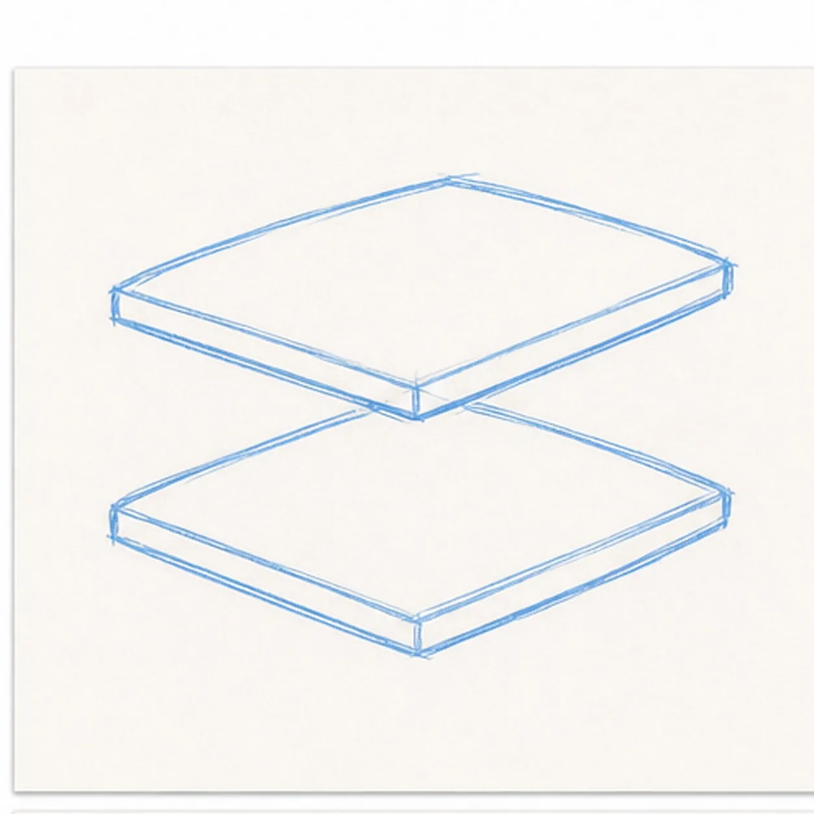
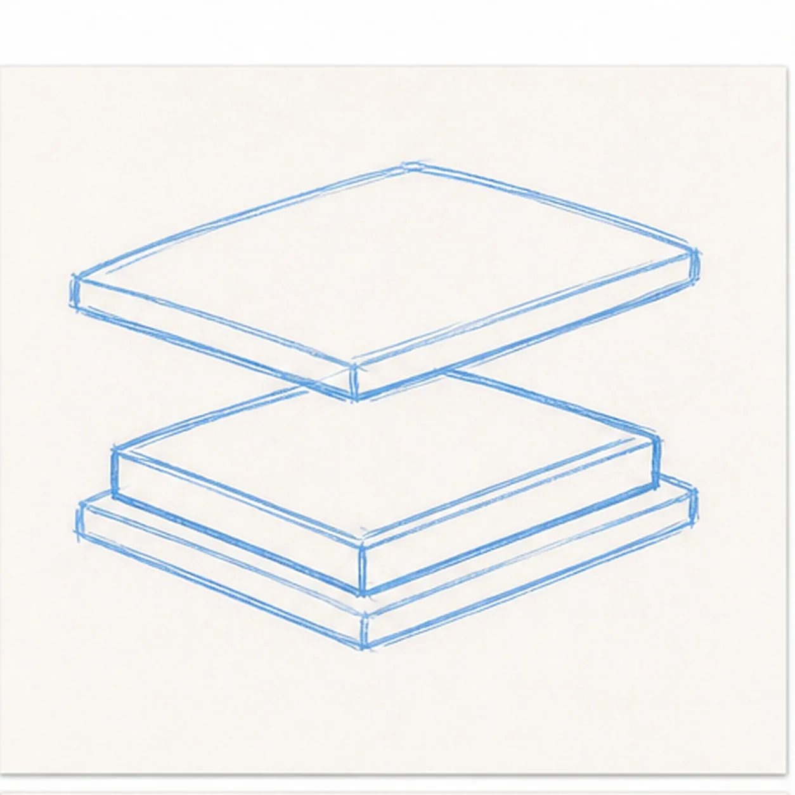
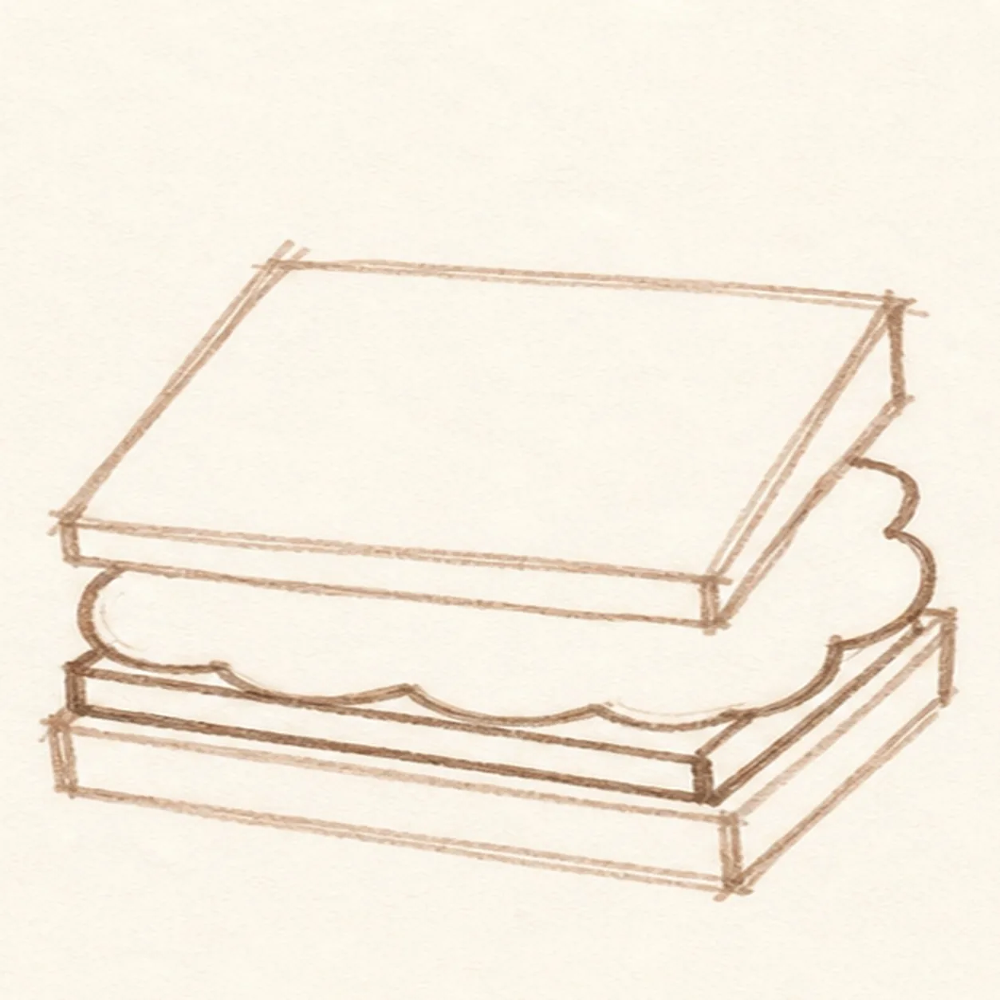
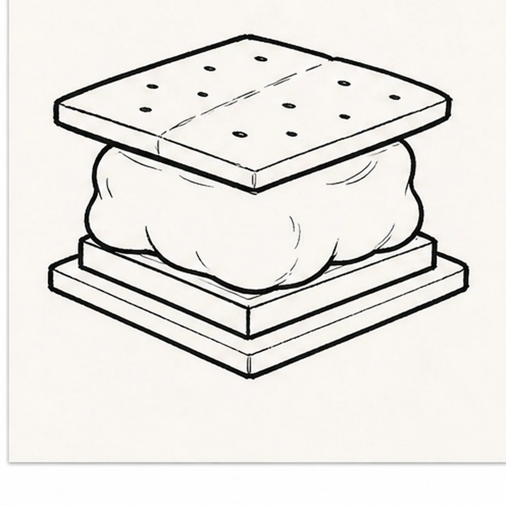
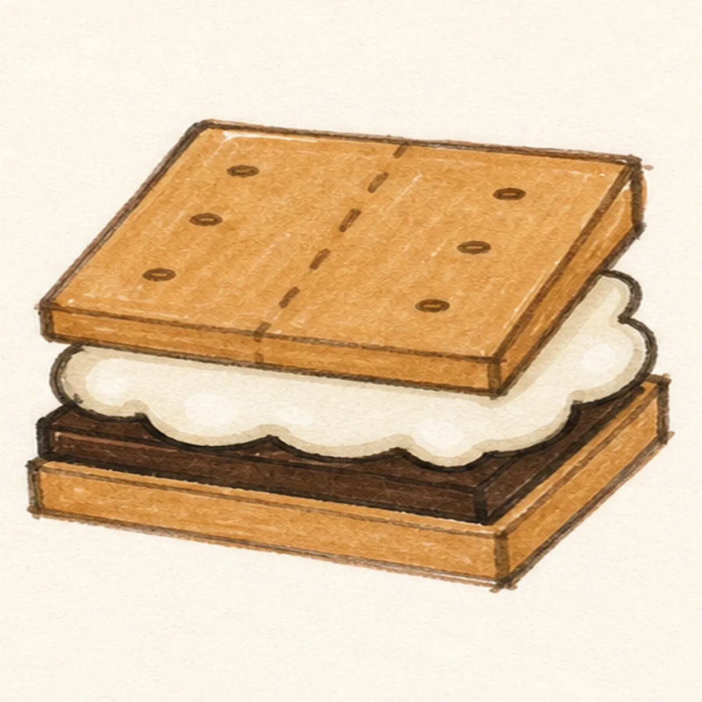

Felt-tip marker mode
Let's doodle a graham cracker s'more
Treat this as one playful practice round: sketch the idea loosely, simplify the shapes, then commit with confident marker outlines and bright fills.
-
01

Block the cracker stack
Draw the top and bottom graham crackers as two slightly tilted squares with a little space between them.
Doodle tip: Keep the corners simple and chunky. A square stack reads faster than a perfectly measured box.
-
02

Squash in the marshmallow
Add a puffy marshmallow layer between the crackers, letting the soft edge bulge past the straight cracker sides.
Doodle tip: Round the marshmallow edge generously. That contrast against the crackers makes the s'more fun to draw.
-
03

Slide in chocolate
Draw a visible chocolate slab under the marshmallow so it peeks out along the front and side.
Doodle tip: Place the chocolate before you color. That keeps the dark layer from becoming a surprise at the end.
-
04

Dot the cracker
Add graham cracker holes and a center break line on the top cracker, then begin thickening the black outlines.
Doodle tip: Use a few bigger dots instead of lots of tiny specks. They will stay readable after marker fill.
-
05

Melt and color
Add melty marshmallow edges, fill the crackers tan, color the chocolate dark brown, add pale marshmallow shadows, and leave shine gaps.
Doodle tip: Let the marker strokes show. Slight streaks make the s'more feel hand-doodled.
-
06

Toast the s'more finish
Thicken the existing black outlines, even the marker fills, clarify the cracker holes and melty edges, and strengthen the small gray shadow.
Doodle tip: Stop before adding a campfire, plate, face, or border. The cracker, marshmallow, and chocolate layers are enough.